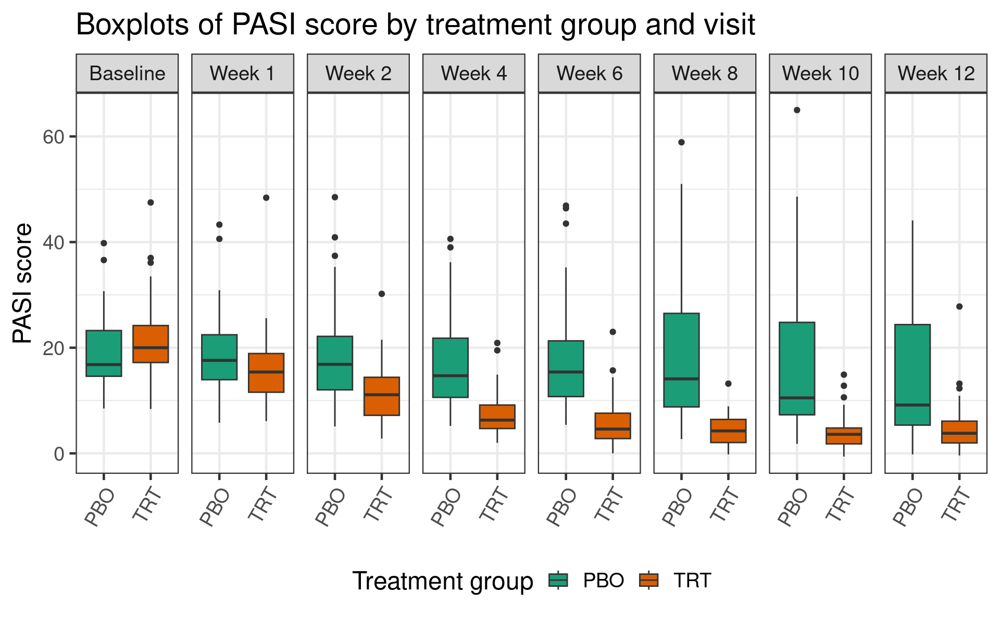
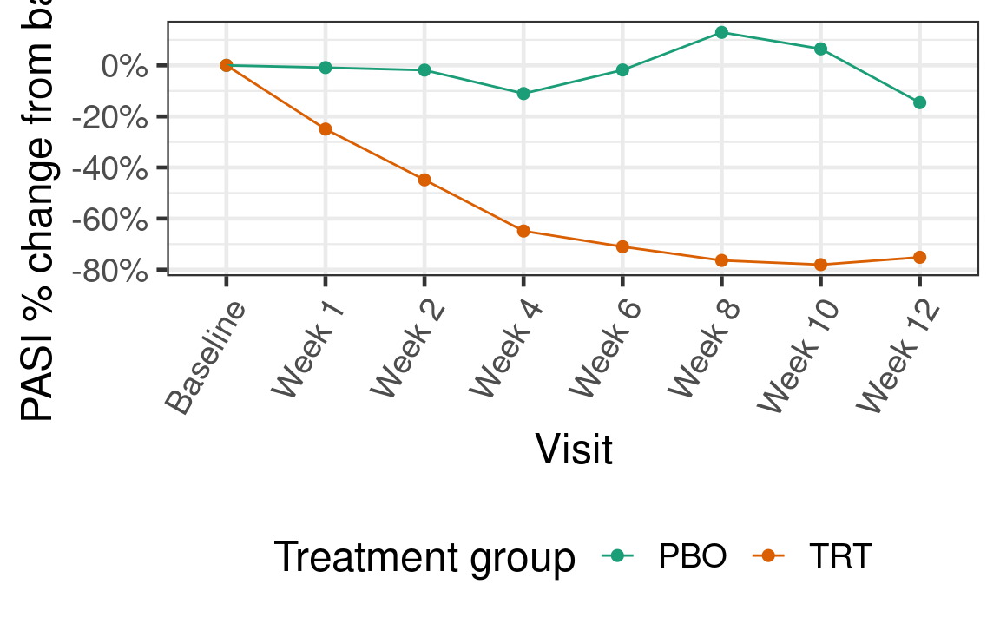
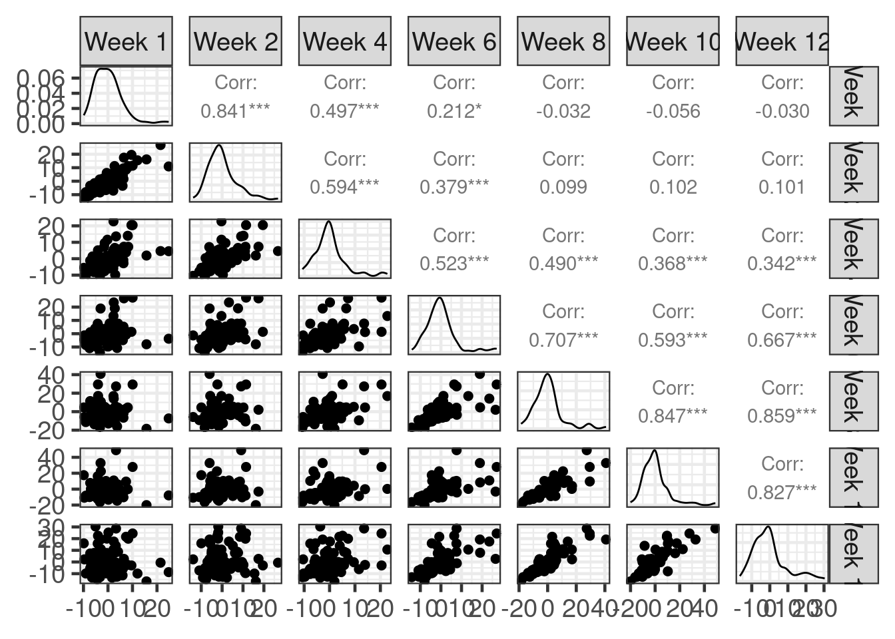
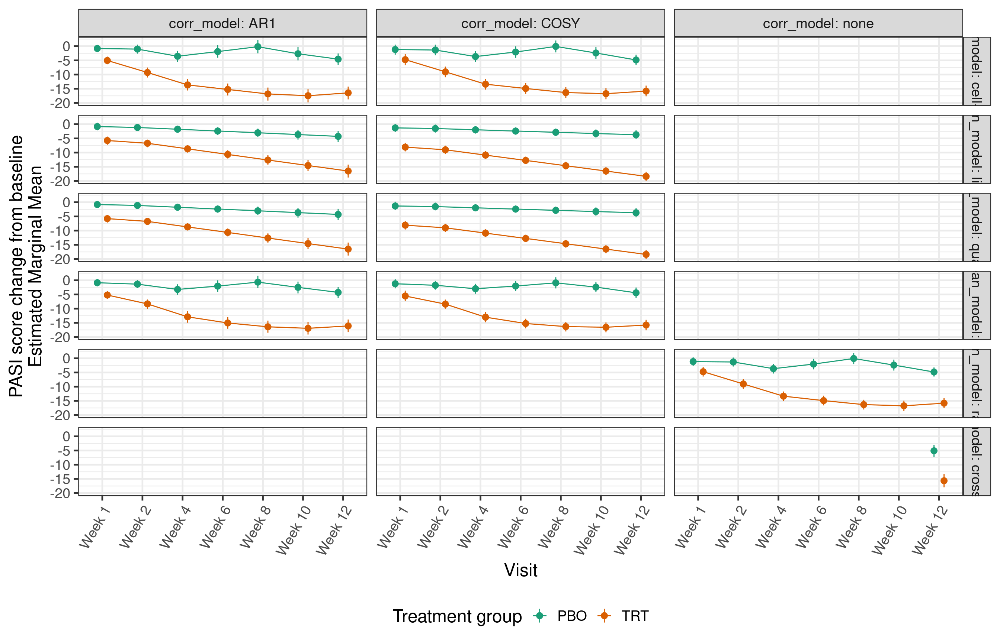
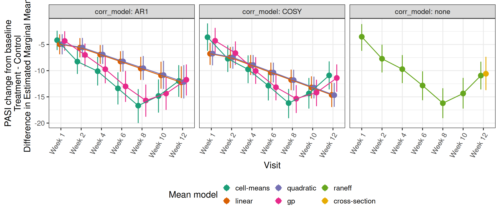
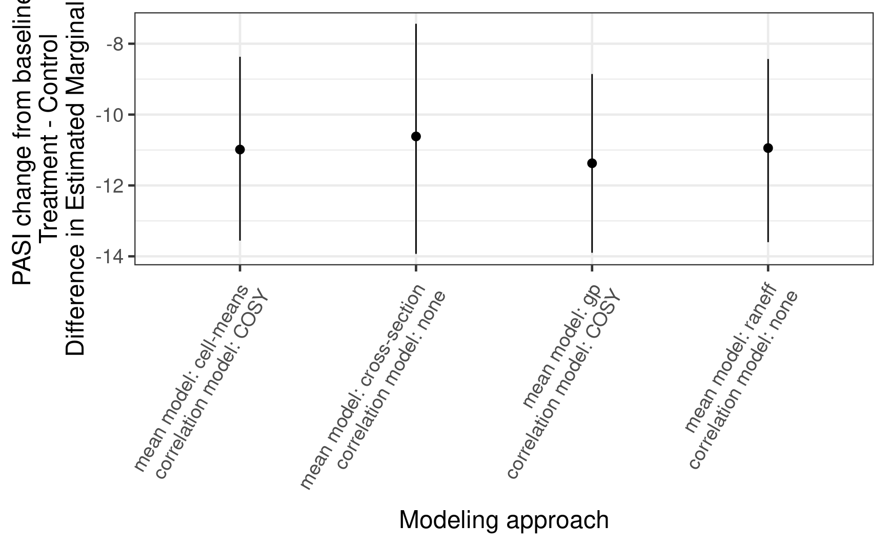
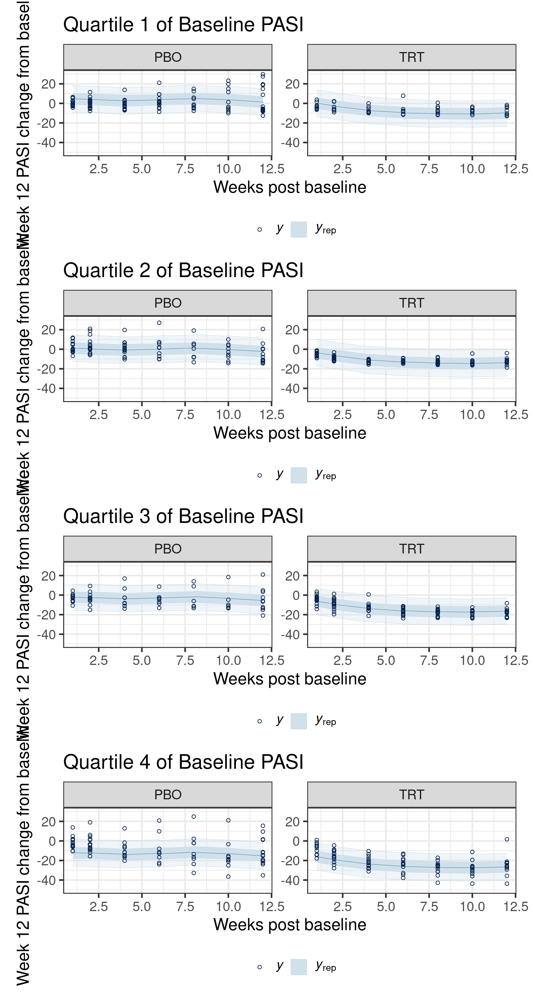
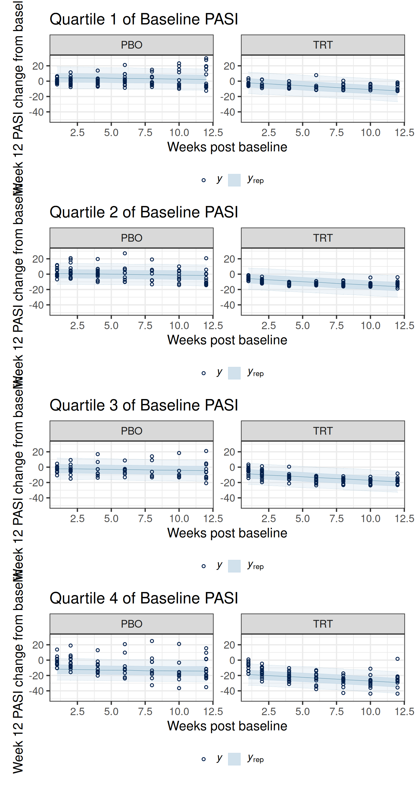
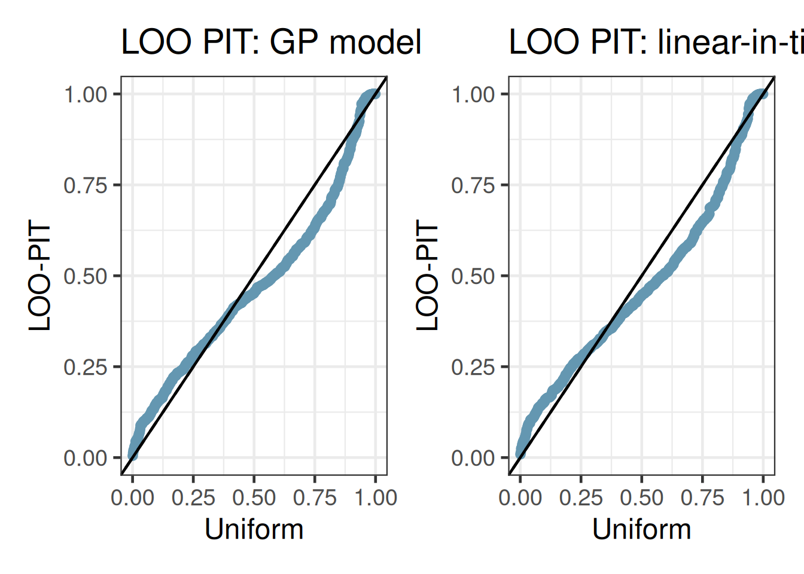

library(dplyr)
library(brms)
library(emmeans)
library(tidyr)
library(readr)
library(purrr)
library(ggplot2)
library(patchwork)
here::i_am("src/02g_longitudinal.qmd")
# instruct brms to use cmdstanr as backend and cache all Stan binaries
options(brms.backend="cmdstanr", cmdstanr_write_stan_file_dir=here::here("_brms-cache"))
# create cache directory if not yet available
dir.create(here::here("_brms-cache"), FALSE)
set.seed(8904568)
control_args <- list(adapt_delta = 0.95)13 Longitudinal data
13.1 Background
Many clinical trials assess efficacy and other endpoints at numerous timepoints post-baseline. For example, consider the case where a continuous response endpoint is assessed every 2 weeks post baseline (Week 2, Week 4, …, Week 12). Although clinical interest may focus on the response rate at a particular visit (e.g. at Week 12), efficacy data at other visits is of course still of interest, either in its own right, to build understanding of the full time vs. efficacy profile, or as a means to increase statistical power for estimation at Week 12.
There are multiple approaches for proceeding with estimation of the Week 12 treatment effect. Adopting a cross-sectional approach , one could ignoring all other post-baseline assessments except Week 12. If certain patients missed the Week 12 assessment, this missing data would need to be handled using an appropriate pre-defined strategy (e.g. for response rate endpoints, imputing missing outcomes with nonresponder status, carrying the last observation forward, multiple imputation approaches, or even dropping missing data altogether). Such approaches may lose signifcant power or incur bias if there is substantial missing data.
Alternatively longitudinal models incorporate the full post-baseline set of assessments to facilitate modeling of efficacy at all visits. In some cases, these may substantially increase statistical power.
The brms package contains a deep suite of modelling tools for longitudinal data, including many options for modelling the mean trajectory across visits/time, and for modelling autocorrelated errors within patients across time. In this section we illustrate some potential uses of these tools in a clinical trial setting.
adpasi <- readr::read_csv(here::here("data", "longitudinal.csv"), show_col_types = FALSE) %>%
dplyr::filter(TRT01P %in% c("PBO", "TRT")) %>%
mutate(AVISIT = factor(AVISIT, paste("Week", c(1, 2 * (1:6)))),
TRT01P = factor(TRT01P, c("PBO", "TRT")))
pasi_data <- filter(adpasi, PARAMCD == "PASITSCO")13.2 Data
The example involves simulated results of a hypothetical Phase-II study of an experimental treatment for Psoriasis. Synthetic data are generated using the mmrm package. We consider a subset of the study involving 100 patients, 50 of whom were randomized to receive placebo, and 50 of whom received treatment.
Efficacy was assessed using the Psoriasis Area and Severity Index (PASI), a numerical score which measures the severity and extent of psoriasis. This is assessed at baseline, and again at 7 post-baseline timepoints.

Two endpoints of interest based on the PASI score are (1) PASI change from baseline, and (2) the binary endpoint PASI 75, which defines a responder as any patient with at least a 75% change from baseline in PASI.

The data has been transformed to follow a typical CDISC Analysis Data Model (ADaM) format.
13.3 Models
There are a few key ingredients to a longitudinal model for the PASI score outcomes.
A mean model which describes the expected value of the response over time, across treatments, and across values of any other relevant covariates.
A correlation model which describes the correlation structure of the error terms.
brms offers many modelling options for each component.
13.3.1 Mean models
13.3.1.1 Cell-means model
The most common approach for modeling the mean in clinical trial practice is to adopt a specification which allows the mean to vary freely across visits, without any parametric specification of the trajectory of the mean over time. Here we will call this the “cell-means” model, where levels of the treatment group and visit comprise the cells.
In this approach, we include all treatment-by-visit interactions. In brms, the formula specification would be:
CHG ~ BASE + TRT01P * AVISIT13.3.1.2 Linear-in-time model
A far stronger assumption would be to assume the mean response is linear in time (i.e. the number of weeks post baseline for visit). In this case, the formula specification would be
CHG ~ BASE + TRT01P * AVISITNNote the key difference is the use of AVISITN (a numeric variable indicating the number of weeks post baseline) rather than AVISIT (a factor variable for the visit id).
Such a model should be considered only for exploratory modelling purposes, and not for confirmatory analyses, the main reason being that the linearity assumption cannot be assessed at the trial design stage before having collected the data.
Even if the linearity assumption appeared reasonable over the time range explored in the trial, it should not be used to extrapolate outside the observed time period.
13.3.1.3 Quadratic-in-time model
In the previous section, we saw there was a hint of curvature in the sample mean response over time:

Hence one might consider a mean model that assumes the mean response is quadratic in time rather than linear:
CHG ~ BASE + TRT01P * AVISITN + TRT01P * AVISITN^2This model should similarly not be used to extrapolate outside the week 1-12 window.
13.3.1.4 Gaussian process prior
An interesting nonparametric alternative to the just-discussed specifications is based on a Gaussian process prior for the mean across visits within treatments. As in the case of the cell-means model, this model does not assume any parametric shape for the mean response over time. It assumes only that the mean response over time follows a continuous curve which is assigned a Gaussian process (GP) prior.
While the GP itself is a continuous-time process, the joint distribution of a realization at any discrete set of timepoints is multivariate normal.
In brms, the formula specification would be as follows:
CHG ~ BASE + TRT01P + gp(AVISITN, by = TRT01P)The implication of this model is that there is a correlation between the mean response at any collection of visits, and the correlation between any pair of visits decays as the time between them increases, according to an exponential covariance function. See ?gp for additional details on the brms implementation.
13.3.2 Correlation models
The repeated measurement of an endpoint over time on the same patient induces autocorrelation between the within-patient measurements. To illustrate, consider if we ignored the correlations and fit a model with uncorrelated errors. Below are scatterplots and correlation coefficients for the residuals of such a fitted model. The correlations are quite strong, especially between visits that are closer in time.
pasi_data <- filter(adpasi, PARAMCD == "PASITSCO")
lm_fit <- lm(CHG ~ BASE + TRT01P * AVISIT, data = pasi_data)
res <- residuals(lm_fit)
pasi_data %>%
mutate(res = res) %>%
select(SUBJID, AVISIT, res) %>%
pivot_wider(id_cols = SUBJID, names_from = AVISIT, values_from = res) %>%
select(-SUBJID) %>%
GGally::ggpairs()
Failing to model these within-subject correlations will result in a loss of statistical power (wider confidence intervals, less powerful tests). brms offers several options for modelling within-subject correlations.
13.3.2.1 Subject-level random effects
One way to achieve within-subject correlation is to use a model that includes a subject-level random effect. When the resulting mean response function is averaged over the distribution of the random effect terms (“integrating them out”), a uniform correlation is induced between all measurements on the same patient. The magnitude of the correlation is determined by the relative size of the random-effect variance and the error variance. (See exercise 1.)
In brms, a subject-level random intercept can be easily added in the formula specification. For example:
CHG ~ BASE + TRT01P * AVISIT + (1 | SUBJID)13.3.2.2 Autoregressive correlation structures
A very common model for serial correlation is based on an autoregressive process. Under such a process, the error term \(\varepsilon_t\) at a timepoint \(t\) is explicitly dependent on some collection of preceeding error terms. Under a first-order autoregressive process, for example, it is dependent only on one of its predecessors: \[ \varepsilon_t = \alpha\varepsilon_{t-1} + Z_t,\] for \(t\geq 2\), where \(Z_t\) are iid \(\mathrm N(0, \sigma^2)\). The process is initialized with \(\varepsilon_1 \sim \mathrm N(0, \sigma^2 / (1 - \alpha^2))\).
The resulting covariance matrix of a collection \((\varepsilon_1,\ldots,\varepsilon_T)\) has a simple form; the reader is referred to the SAS paper “Guidelines for Selecting the Covariance Structure in Mixed Model Analysis” by Chuck Kincaid for detail on the AR structure (c.f. page 2), and other covariance structures.
The autocor argument of brm() and brmsformula() is used to set an autoregressive correlation strucutre. For order-1 autoregressive. Below is a choice of AR(1) autocorrelation that we might consider in the psoriasis example:
~ar(time = AVISIT, gr = SUBJID, p = 1)This choice implies that autocorrelation exists across visits within subjects.
13.3.2.3 Compound symmetry
Another choice offered by brms is that of compound symmetry. The reader is again referred to the SAS paper linked above and ?cosy for more information.
~cosy(time = AVISIT, gr = SUBJID)13.3.2.4 Other choices
brms offers several other choices for autocorrelation models. See ?'autocor-terms' for more a listing.
We note that currently, unstructured correlation models (a standard choice for MMRM specifications in clinical trial protocols) re not supported by brms.
However, fixed correlation structures are, and one could consider plugging in for this an unstructured correlation estimate from a frequentist MMRM. For example,
# fit a MMRM using gls
gls_fit <- nlme::gls(CHG ~ BASE + TRT01P * AVISIT,
data = pasi_data,
correlation = nlme::corSymm(form = ~ 1 | SUBJID))
# estimated correlation matrices by subject
Sig_subj <- nlme::corMatrix(gls_fit$modelStruct[[1]])
Sig_subj[1]$`1`
[,1] [,2] [,3] [,4] [,5] [,6] [,7]
[1,] 1.00000000 0.896714971 0.5883171 0.2669088 -0.03659905 -0.05666876 -0.087751306
[2,] 0.89671497 1.000000000 0.6313654 0.3841036 0.03162521 0.03550198 0.008196384
[3,] 0.58831712 0.631365431 1.0000000 0.4509002 0.37604603 0.21075194 0.246514616
[4,] 0.26690877 0.384103637 0.4509002 1.0000000 0.63152510 0.47401182 0.592176181
[5,] -0.03659905 0.031625213 0.3760460 0.6315251 1.00000000 0.77205541 0.796716238
[6,] -0.05666876 0.035501982 0.2107519 0.4740118 0.77205541 1.00000000 0.741103610
[7,] -0.08775131 0.008196384 0.2465146 0.5921762 0.79671624 0.74110361 1.000000000A block-diagonal matrix containing these estimated within-subject correlations could be plugged in as the M argument of the fcor() function in brms.
13.3.3 Cross-sectional approaches
For modeling a continuous endpoint such as PASI, the cross-sectional analogue of the longitudinal models we’ve discussed is the ANCOVA model, in which a linear regression model (conditioning as before on the baseline PASI covariate) is fit to the Week-12 cross section of data.
# analysis data includes only the Week 12 cross section
ancova_data <- filter(adpasi, PARAMCD == "PASITSCO", DROPFL, AVISITN == 12)
# formula specification for ANCOVA
ancova_formula <- bf(
CHG ~ BASE + TRT01P,
family = gaussian(),
center = FALSE,
nl = FALSE
)
ancova_prior <- get_prior(
ancova_formula,
data = ancova_data
)
ancova_fit <- brm(
ancova_formula,
prior = ancova_prior,
data = ancova_data,
seed = 46474576,
control = control_args,
refresh = 0
)In the next section, this model is also explored for the purposes of comparing to the longitudinal approaches
13.4 Results
A typical estimand for longitudinal or ANCOVA involve Least Squares means (LS means) or estimated marginal means (EMM). Inference for EMMs is extremely convenient with brms due to its integration with the emmeans R package. The EMM can be roughly understood as the average, stratified by treatment group and visit, of the mean prediction across subjects in the trial.
We begin by briefly illustrating how emmeans can be used with a brmsfit object to estimate LS means and their contrasts.
analysis_data <- filter(adpasi, PARAMCD == "PASITSCO", DROPFL)
brms_formula <- bf(
CHG ~ BASE + TRT01P * AVISIT,
autocor = ~ cosy(time = AVISIT, gr = SUBJID),
family = gaussian(),
center = FALSE,
nl = FALSE
)
prior <- get_prior(
brms_formula,
data = analysis_data
)
fit <- brm(
brms_formula,
prior = prior,
data = analysis_data,
seed = 46474576,
control = control_args,
refresh = 0
)Running MCMC with 4 sequential chains...
Chain 1 finished in 22.1 seconds.
Chain 2 finished in 21.4 seconds.
Chain 3 finished in 21.6 seconds.
Chain 4 finished in 20.2 seconds.
All 4 chains finished successfully.
Mean chain execution time: 21.3 seconds.
Total execution time: 85.9 seconds.fit Family: gaussian
Links: mu = identity
Formula: CHG ~ BASE + TRT01P * AVISIT
autocor ~ cosy(time = AVISIT, gr = SUBJID)
Data: analysis_data (Number of observations: 684)
Draws: 4 chains, each with iter = 2000; warmup = 1000; thin = 1;
total post-warmup draws = 4000
Correlation Structures:
Estimate Est.Error l-95% CI u-95% CI Rhat Bulk_ESS Tail_ESS
cosy 0.41 0.04 0.33 0.51 1.00 3163 2356
Regression Coefficients:
Estimate Est.Error l-95% CI u-95% CI Rhat Bulk_ESS Tail_ESS
Intercept 12.95 1.87 9.29 16.56 1.00 2673 2488
BASE -0.70 0.08 -0.85 -0.54 1.00 3934 3210
TRT01PTRT -3.56 1.59 -6.62 -0.45 1.00 1884 2654
AVISITWeek2 -0.16 1.16 -2.47 2.11 1.00 2034 2992
AVISITWeek4 -2.49 1.23 -4.87 0.02 1.00 2158 2789
AVISITWeek6 -0.87 1.31 -3.46 1.70 1.00 2142 2597
AVISITWeek8 1.10 1.34 -1.55 3.77 1.00 2250 2734
AVISITWeek10 -1.22 1.32 -3.78 1.43 1.00 2184 2506
AVISITWeek12 -3.66 1.17 -6.01 -1.41 1.00 2064 2704
TRT01PTRT:AVISITWeek2 -4.13 1.75 -7.59 -0.71 1.00 1942 2370
TRT01PTRT:AVISITWeek4 -6.15 1.79 -9.73 -2.59 1.00 2173 2821
TRT01PTRT:AVISITWeek6 -9.30 1.83 -12.89 -5.67 1.00 1916 2290
TRT01PTRT:AVISITWeek8 -12.69 1.85 -16.38 -9.16 1.00 1981 2465
TRT01PTRT:AVISITWeek10 -10.77 1.89 -14.41 -7.06 1.00 2080 2343
TRT01PTRT:AVISITWeek12 -7.38 1.73 -10.82 -4.09 1.00 1890 2542
Further Distributional Parameters:
Estimate Est.Error l-95% CI u-95% CI Rhat Bulk_ESS Tail_ESS
sigma 8.21 0.32 7.65 8.89 1.00 3278 2296
Draws were sampled using sample(hmc). For each parameter, Bulk_ESS
and Tail_ESS are effective sample size measures, and Rhat is the potential
scale reduction factor on split chains (at convergence, Rhat = 1).# estimate the EMMs
emm <- emmeans(fit, c("TRT01P", "AVISIT"), nesting = list())
emm TRT01P AVISIT emmean lower.HPD upper.HPD
PBO Week 1 -1.214 -3.38 0.8924
TRT Week 1 -4.782 -6.98 -2.3953
PBO Week 2 -1.378 -3.45 0.7517
TRT Week 2 -9.065 -11.30 -6.7377
PBO Week 4 -3.718 -6.02 -1.4343
TRT Week 4 -13.426 -15.69 -11.3379
PBO Week 6 -2.099 -4.40 0.3942
TRT Week 6 -14.976 -17.23 -12.6760
PBO Week 8 -0.144 -2.63 2.2711
TRT Week 8 -16.363 -18.77 -14.1551
PBO Week 10 -2.449 -4.94 0.0976
TRT Week 10 -16.780 -19.11 -14.3734
PBO Week 12 -4.874 -7.17 -2.7912
TRT Week 12 -15.795 -18.10 -13.5977
Point estimate displayed: median
HPD interval probability: 0.95 # estimate EMM contrasts
emm_contrasts <- contrast(emm, method = "revpairwise", by = "AVISIT")
emm_contrastsAVISIT = Week 1:
contrast estimate lower.HPD upper.HPD
TRT - PBO -3.58 -6.53 -0.391
AVISIT = Week 2:
contrast estimate lower.HPD upper.HPD
TRT - PBO -7.67 -10.81 -4.698
AVISIT = Week 4:
contrast estimate lower.HPD upper.HPD
TRT - PBO -9.70 -12.87 -6.692
AVISIT = Week 6:
contrast estimate lower.HPD upper.HPD
TRT - PBO -12.88 -16.12 -9.505
AVISIT = Week 8:
contrast estimate lower.HPD upper.HPD
TRT - PBO -16.24 -19.47 -12.831
AVISIT = Week 10:
contrast estimate lower.HPD upper.HPD
TRT - PBO -14.33 -17.57 -10.757
AVISIT = Week 12:
contrast estimate lower.HPD upper.HPD
TRT - PBO -10.93 -14.22 -8.029
Point estimate displayed: median
HPD interval probability: 0.95 13.4.1 Fitting several models
In order to understand the impact of possible choices for the mean model and correlation model, we fit a series of models in loop.
Code to prepare a list of models to be fit:
Code
setup_analyses <- function(adpasi){
formulas <- tribble(
~endpoint, ~formula_name, ~paramcd, ~family, ~formula, ~correl, ~longitudinal,
"PASI", "cell-means", "PASITSCO", gaussian(), CHG ~ BASE + TRT01P * AVISIT, TRUE, TRUE,
"PASI", "linear", "PASITSCO", gaussian(), CHG ~ BASE + TRT01P * AVISITN, TRUE, TRUE,
"PASI", "quadratic", "PASITSCO", gaussian(), CHG ~ BASE + TRT01P * AVISITN + TRT01P * AVISITN ^ 2, TRUE, TRUE,
"PASI", "gp", "PASITSCO", gaussian(), CHG ~ BASE + TRT01P + gp(AVISITN, by = TRT01P), TRUE, TRUE,
"PASI", "raneff", "PASITSCO", gaussian(), CHG ~ BASE + TRT01P * AVISIT + (1 | SUBJID), FALSE, TRUE,
"PASI", "cross-section", "PASITSCO", gaussian(), CHG ~ BASE + TRT01P, FALSE, FALSE
)
datasets <- tribble(
~paramcd, ~longitudinal, ~missing_approach, ~analysis_data,
"PASITSCO", TRUE, "drop", filter(adpasi, PARAMCD == "PASITSCO", DROPFL),
"PASITSCO", FALSE, "drop", filter(adpasi, PARAMCD == "PASITSCO", DROPFL, AVISITN == 12)
)
autocor <- tribble(
~correl, ~autocor_name, ~autocor,
TRUE, "AR1", ~ ar(time = AVISIT, gr = SUBJID, p = 1),
TRUE, "COSY", ~ cosy(time = AVISIT, gr = SUBJID)
)
analyses <- formulas %>%
full_join(datasets, c("paramcd", "longitudinal"), multiple = "all") %>%
full_join(autocor, c("correl"), multiple = "all") %>%
replace_na(list(autocor_name = "none"))
analyses
}Code to fit the models in a loop using clustermq:
Code
here::i_am("src/longitudinal/fit_models.R")
library(dplyr)
library(brms)
library(tidyr)
library(ggplot2)
library(readr)
library(here)
library(emmeans)
library(clustermq)
library(purrr)
source(here("src", "longitudinal", "setup_analyses.R"))
# iter <- Sys.getenv("BRMS_ITER")
# chains <- Sys.getenv("BRMS_CHAINS")
adpasi <- readr::read_csv(here("data", "longitudinal.csv")) %>%
mutate(AVISIT = factor(AVISIT, paste("Week", c(1, 2 * (1:6)))),
TRT01P = factor(TRT01P, c("PBO", "TRT")))
analyses <- setup_analyses(adpasi)
analyses <- filter(analyses, endpoint == "PASI") %>%
mutate(id = 1:n())
fit_model <- function(id, analysis_data, formula, formula_name,
family, correl, autocor, autocor_name,
save_individuals = FALSE){
# set up the formula ---------------------------------------------------------
if(correl){
autocor <- autocor
} else{
autocor <- NULL
}
brms_formula <- bf(
formula,
autocor = autocor,
family = family,
center = FALSE,
nl = FALSE
)
# fit the model --------------------------------------------------------------
prior <- get_prior(
brms_formula,
data = analysis_data
)
cat("\n*** Fitting model", id, ": ", formula_name, ", ", autocor_name, "***\n")
fit <- brm(
brms_formula,
prior = prior,
cores = 4,
backend = "rstan",
data = analysis_data
)
if(save_individuals) saveRDS(fit, here::here("reports", paste0("longitudinal_fit_", id, ".rds")))
# estimate marginal means ----------------------------------------------------
cat("\n*** Estimating marginal means", id, ": ", formula_name, ", ", autocor_name, "***\n")
base <- analysis_data %>%
select(SUBJID, BASE) %>%
distinct()
visits <- analysis_data %>%
select(AVISIT, AVISITN) %>%
distinct()
treatments <- analysis_data %>%
select(TRT01P) %>%
distinct()
emm <- bind_rows(lapply(
split(visits, 1:nrow(visits)),
function(visit){
nd <- visit %>%
crossing(treatments) %>%
crossing(base) %>%
split(.$TRT01P)
lp <- map(nd, ~ posterior_linpred(fit, transform = TRUE, newdata = .))
marginal_mean <- lapply(lp, rowMeans) %>%
as_tibble() %>%
mutate(diff = .[[2]] - .[[1]]) %>%
setNames(c(names(nd),
paste(rev(names(nd)), collapse = " - ")))
bind_cols(
visit,
summarise_draws(as_draws_df(marginal_mean))
) %>%
mutate(
TRT01P = factor(variable, levels(analysis_data$TRT01P)),
contrast = case_when(
is.na(TRT01P) ~ variable,
TRUE ~ NA_character_
)
)
}
))
if(save_individuals) saveRDS(emm, here::here("reports", paste0("longitudinal_emm", id, ".rds")))
return(emm)
}
emm <- clustermq::Q_rows(
select(analyses, id, analysis_data, formula, formula_name, family, correl, autocor, autocor_name),
fit_model,
const = list(save_individuals = FALSE),
n_jobs = nrow(analyses),
pkgs = c("brms", "emmeans", "tidyr", "dplyr", "purrr", "posterior"),
template = list(
walltime = 120,
job_name = "longitudinal_child",
log_file = here("reports", "longitudinal_child_%I.log"),
memory = 8000,
cores = 4
),
job_size = 1
)
saveRDS(emm, file = here("reports", "longitudinal_fits.rds"))
saveRDS(analyses, file = here("reports", "longitudinal_analyses.rds"))
analyses$emm <- emm13.4.2 PASI change from baseline: EMMs by visit
`geom_path()`: Each group consists of only one observation.
ℹ Do you need to adjust the group aesthetic?
13.4.3 PASI change from baseline: EMM contrasts with placebo by visit
contrast_results <- analyses %>%
select(formula_name, autocor_name, emm) %>%
unnest(emm) %>%
dplyr::filter(!is.na(contrast)) %>%
mutate(formula_name = factor(formula_name, unique(formula_name)),
autocor_name = factor(autocor_name, unique(autocor_name)),
contrast = factor(contrast, unique(contrast))) %>%
rename(
mean_model = formula_name,
corr_model = autocor_name
)
blank <- mutate(slice(group_by(contrast_results, mean_model, corr_model), 1), estimate = 0)
ggplot(
data = contrast_results,
mapping = aes(x = AVISIT, group = mean_model, color = mean_model,
y = median, ymin = q5, ymax = q95)
) +
geom_pointrange(position = position_dodge(0.5)) +
geom_path(position = position_dodge(0.5)) +
labs(x = "Visit", y = "PASI change from baseline\nTreatment - Control\nDifference in Estimated Marginal Means") +
geom_blank(data = blank) +
facet_grid(. ~ corr_model, labeller = label_both) +
scale_x_discrete(labels = levels(pasi_data$AVISIT)) +
scale_color_discrete("Mean model") +
theme(axis.text.x = element_text(angle = 60, hjust = 1, vjust = 1),
legend.position = "bottom")
13.4.4 Estimates of Week 12 efficacy
contrast_results %>%
dplyr::filter(AVISITN == 12,
!mean_model %in% c("linear", "quadratic"),
corr_model %in% c("COSY", "none")) %>%
mutate(method = paste("mean model:", mean_model, "\ncorrelation model:", corr_model)) %>%
ggplot(aes(x = method, y = median, ymin = q5, ymax = q95)) +
geom_pointrange(position = position_dodge(0.6)) +
labs(x = "Modeling approach",
y = "PASI change from baseline\nTreatment - Control\nDifference in Estimated Marginal Means") +
theme(axis.text.x = element_text(angle = 60, hjust = 1, vjust = 1),
legend.position = "bottom")
13.4.5 Assessing model fit
In this section we illustrate the use of side-by-side posterior predictive checks to compare the fit of two models: one with a GP prior for the mean structure and one with a linear-in-time model for the mean, each with compound-symmetric autocorration models.
The checks are done across timepoint (# of weeks since baseline), by treatment group and quartile of the distribution of baseline PASI.
# Gaussian process model -------------------------------------
gp_formula <- bf(
CHG ~ BASE + TRT01P + gp(AVISITN, by = TRT01P),
autocor = ~ cosy(time = AVISIT, gr = SUBJID),
family = gaussian(),
center = FALSE,
nl = FALSE
)
gp_prior <- get_prior(
gp_formula,
data = analysis_data
)
gp_fit <- brm(
gp_formula,
prior = gp_prior,
data = analysis_data,
seed = 46474576,
control = control_args,
refresh = 0
)make[2]: warning: jobserver unavailable: using -j1. Add '+' to parent make rule.Start samplingRunning MCMC with 4 sequential chains...
Chain 1 finished in 42.9 seconds.
Chain 2 finished in 59.8 seconds.
Chain 3 finished in 84.1 seconds.
Chain 4 finished in 89.1 seconds.
All 4 chains finished successfully.
Mean chain execution time: 69.0 seconds.
Total execution time: 276.8 seconds.Warning: 10 of 4000 (0.0%) transitions ended with a divergence.
See https://mc-stan.org/misc/warnings for details.# Linear mean model -------------------------------------
lm_formula <- bf(
CHG ~ BASE + TRT01P * AVISITN,
autocor = ~ cosy(time = AVISIT, gr = SUBJID),
family = gaussian(),
center = FALSE,
nl = FALSE
)
lm_prior <- get_prior(
lm_formula,
data = analysis_data
)
lm_fit <- brm(
lm_formula,
prior = lm_prior,
data = analysis_data,
seed = 46474576,
control = control_args,
refresh = 0
)Start samplingRunning MCMC with 4 sequential chains...
Chain 1 finished in 8.1 seconds.
Chain 2 finished in 7.6 seconds.
Chain 3 finished in 6.8 seconds.
Chain 4 finished in 7.0 seconds.
All 4 chains finished successfully.
Mean chain execution time: 7.4 seconds.
Total execution time: 30.1 seconds.base_quartiles <- pasi_data %>%
select(SUBJID, BASE) %>%
distinct() %>%
pull(BASE) %>%
quantile(c(0, 0.25, 0.5, 0.75, 1))
quartile_center <- (base_quartiles[1:4] + base_quartiles[2:5]) / 2
full_newdata <- pasi_data %>%
select(SUBJID, BASE) %>%
distinct() %>%
mutate(base_catn = as.numeric(cut(BASE, base_quartiles)),
base_cat = paste("Baseline PASI quartile", base_catn),
BASE = quartile_center[base_catn])
pp_checks <- lapply(
split(full_newdata, full_newdata$base_catn),
function(nd){
p1 <- brms::pp_check(gp_fit, type = "ribbon_grouped", group = "TRT01P", x = "AVISITN",
newdata = inner_join(nd, select(pasi_data, -BASE), "SUBJID", multiple = "all"),
y_draw = "points") +
labs(x = "Weeks post baseline",
y = "Week 12 PASI change from baseline",
title = paste("Quartile", unique(nd$base_catn), "of Baseline PASI")) +
theme(legend.position = "bottom") +
ylim(-50, 30)
p2 <- brms::pp_check(lm_fit, type = "ribbon_grouped", group = "TRT01P", x = "AVISITN",
newdata = inner_join(nd, select(pasi_data, -BASE), "SUBJID", multiple = "all"),
y_draw = "points") +
labs(x = "Weeks post baseline",
y = "Week 12 PASI change from baseline",
title = paste("Quartile", unique(nd$base_catn), "of Baseline PASI")) +
theme(legend.position = "bottom") +
ylim(-50, 30)
list(
gp = p1,
lm = p2
)
}
)Using all posterior draws for ppc type 'ribbon_grouped' by default.Using all posterior draws for ppc type 'ribbon_grouped' by default.
Using all posterior draws for ppc type 'ribbon_grouped' by default.
Using all posterior draws for ppc type 'ribbon_grouped' by default.
Using all posterior draws for ppc type 'ribbon_grouped' by default.
Using all posterior draws for ppc type 'ribbon_grouped' by default.
Using all posterior draws for ppc type 'ribbon_grouped' by default.
Using all posterior draws for ppc type 'ribbon_grouped' by default.Now we visualize the posterior predictive distribution against the observed data, first for the Gaussian process model:
Code
pp_checks[[1]]$gp / pp_checks[[2]]$gp / pp_checks[[3]]$gp / pp_checks[[4]]$gp
and next for the linear-in-time model:
Code
pp_checks[[1]]$lm / pp_checks[[2]]$lm / pp_checks[[3]]$lm / pp_checks[[4]]$lm
Another useful visualization for assessing model involves approximate leave-one-out (LOO) cross-validation techniques.
One can numerically compare the approximate expected log predictive density (ELPD) for holdout observations using loo_compare.
loo_gp <- loo(gp_fit)
loo_lm <- loo(lm_fit)
loo_compare(loo_gp, loo_lm) elpd_diff se_diff
gp_fit 0.0 0.0
lm_fit -20.8 5.2 This suggests the Gaussian-process based model has a superior model fit.
To visualize the predictive densities versus observed values, pp_check() with type "loo_pit". In these visualizations, the observed outcomes are compared with their respective leave-one-out predictive distributions using the probability integral transformation (PIT). In an ideal model fit, the resulting PIT-transformed values would be uniformly distributed: i.e. the blue points and dashed lines would align with the distribution function of a Uniform(0,1) variable (solid line).
gp_loo <- pp_check(gp_fit, type = "loo_pit_qq") + geom_abline(intercept = 0, slope = 1) + ggtitle("LOO PIT: GP model")Some PIT values larger than 1! Largest: 1
Rounding PIT > 1 to 1.lm_loo <- pp_check(lm_fit, type = "loo_pit_qq") + geom_abline(intercept = 0, slope = 1) + ggtitle("LOO PIT: linear-in-time model")Some PIT values larger than 1! Largest: 1
Rounding PIT > 1 to 1.gp_loo + lm_loo
13.5 Exercises
- Using
brms, fit a cross-sectional (non longitudinal) logistic regression model to the binary PASI 75 endpoint at Week 12. The only covariate term should be the treatment effect. Use the following analysis data (which uses only the Week 12 outcomes, and uses nonresponder imputation for any missing outcomes at Week 12). Use theemmeanspackage and function to estimate the marginal mean Week 12 response rates by treatment. Useemmeans::contrastto estimate the treatment-vs-control contrasts in response rates.
adpasi <- readr::read_csv(here::here("data", "longitudinal.csv"), show_col_types = FALSE) %>%
dplyr::filter(TRT01P %in% c("PBO", "TRT")) %>%
mutate(AVISIT = factor(AVISIT, paste("Week", c(1, 2 * (1:6)))),
TRT01P = factor(TRT01P, c("PBO", "TRT")))
analysis_data1 <- filter(adpasi, PARAMCD == "PSRS75", NRFL, AVISIT == "Week 12")Code
# solution
fit1 <- brm(AVAL ~ TRT01P, family = bernoulli(), data = analysis_data1,
silent = 2, refresh = 0)
emm1 <- emmeans(fit1, c("TRT01P"), transform = "response")
emm1
contrast(emm1, method = "revpairwise")- Fit a longitudinal model to the binary PASI 75 endpoint. Use a Gaussian process prior (stratified by treatment arm) for the mean across weeks and an AR(1) process to model autocorrelation in the residuals. Use the following analysis data (in which any missing assessments are not imputed). Use the
emmeanspackage and function to estimate the marginal mean response rates by treatment and visit. Useemmeans::contrastto estimate the treatment-vs-control contrasts in response rates by visit. How does the inference for Week 12 response rate difference compare to the cross-sectional model fit from 1?
analysis_data2 <- filter(adpasi, PARAMCD == "PSRS75", !MISSFL)Code
# solution
fit2 <- brm(
bf(
AVAL ~ TRT01P + gp(AVISITN, by = TRT01P),
autocor = ~ cosy(time = AVISIT, gr = SUBJID)
),
data = analysis_data2,
silent = 2,
refresh = 0
)
emm2 <- emmeans(fit2, c("TRT01P", "AVISITN"), cov.keep = c("TRT01P", "AVISITN"), nesting = list("AVISTN" = "AVISIT"), transform = "response")
emm2
contrast(emm2, method = "revpairwise", by = "AVISITN")- Use Leave-One-Out cross validation to compare the model fits to the observed Week 12 data. (Hint: use
loo(fit, newdata = newdata)with the below choice of newdata, then useloo_compare). Which model has better predictive power?
newdata <- filter(adpasi, PARAMCD == "PSRS75", !MISSFL, AVISIT == "Week 12")Code
# solution
loo1 <- loo(fit1, newdata = newdata)
loo2 <- loo(fit2, newdata = newdata)
loo_compare(loo1, loo2)- (Advanced) In this exercise, we will use a model fit to the continuous PASI change from baseline to do inference on the binary 75 response rate. First, fit a GP-based model to the PASI endpoint using the following code:
pasi_fit <- brm(
bf(
CHG ~ BASE + TRT01P + gp(AVISITN, by = TRT01P),
autocor = ~ cosy(time = AVISIT, gr = SUBJID)
),
data = pasi_data,
family = gaussian()
)Next, create two sets of covariate values that includes “counterfactuals” for each patient as if they received both treatment and control. The following code is convenient:
x_treatment <- mutate(filter(pasi_data, AVISIT == "Week 12"),
TRT01P = factor("TRT", levels(pasi_data$TRT01P)))
x_control <- mutate(filter(pasi_data, AVISIT == "Week 12"),
TRT01P = factor("PBO", levels(pasi_data$TRT01P)))Next, for each of x_treatment and x_control:
- use
posterior_predictusing thenewdataargument to sample from the posterior predictive distribution for PASI change from baseline at each levelx_treatmentandx_control, respectively. The result ofposterior_predictwhose columns are posterior predictions of PASI change from baseline for individual patients. - Divide these predictions by the baseline PASI for the respective patients to obtain predictive draws for PASI % change from baseline.
- Convert the result to binary indicators of PASI % change from baseline being below \(-75\%\).
- For each MCMC iteration, compute the percentage of responders to obtain a vector of posterior draws for the marginal mean response rates for
x_treatmentandx_control, respectively. - How do the median and credible intervals for the marginal mean response rates compare to the results of
emmeansfrom exercises 1 and 2? - Graph the posterior density for the difference in marginal mean response rates for treatment minus control.
Code
# solution
# predicted change from baseline
pasi_chg_treatment <- posterior_predict(pasi_fit, newdata = x_treatment)
pasi_chg_control <- posterior_predict(pasi_fit, newdata = x_control)
# predicted % change from baseline
pasi_pchg_treatment <- sweep(pasi_chg_treatment, 2, x_treatment$BASE, '/')
pasi_pchg_control <- sweep(pasi_chg_control, 2, x_control$BASE, '/')
# predicted PASI 75 response
pasi_rr_treatment <- pasi_pchg_treatment < -0.75
pasi_rr_control <- pasi_pchg_control < -0.75
# marginal PASI 75 response rates
marginal_rr_treatment <- rowMeans(pasi_rr_treatment)
marginal_rr_control <- rowMeans(pasi_rr_control)
# How do the median and credible intervals compare to emm1 and emm2?
apply(cbind(trt = marginal_rr_treatment,
ctrl = marginal_rr_control), 2, median)
coda::HPDinterval(coda::as.mcmc(cbind(trt = marginal_rr_treatment,
ctrl = marginal_rr_control)))
emm1
emm2
# visualize posterior distribution for marginal mean response rates by treatment
qplot(
x = cbind(marginal_rr_control, marginal_rr_treatment),
group = cbind(rep("control", length(marginal_rr_treatment)),
rep("treatment", length(marginal_rr_treatment))),
color = cbind(rep("control", length(marginal_rr_treatment)),
rep("treatment", length(marginal_rr_treatment))),
geom = "density"
) + scale_color_discrete(NULL) + theme(legend.position = "bottom") +
labs(x = "Marginal mean response rate",
y = "Posterior density")
# visualize posterior distribution for difference in response rates
qplot(
x = marginal_rr_treatment - marginal_rr_control,
geom = "density"
) +
labs(x = "Difference in marginal mean response rate",
y = "Posterior density")